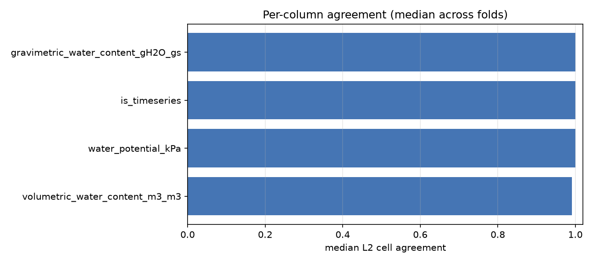

Evaluating an LLM agent on soil-moisture data harmonization
Each slide states what we measure and why, then what we found.
Metric definitions in full: docs/evaluation_metrics.md.
1
What is being compared
There are 19 folds. Each hides one dataset from the agent's reference material,
hands it that dataset's raw files, and asks it to harmonize them. We compare the
result against what a domain expert produced for the same dataset.
The reference
bervodata.watershed_sfa_soil_moisture.ddt_soil_moisture_observation —
6.4M rows covering all 19 datasets. This is the expert's own harmonized output loaded
into BERDL, so it is a complete reference rather than the 49-row snippets kept
in the repo. Its 19 dataset identifiers map one-to-one onto the 19 fold targets.
Three translations applied first
Each would silently corrupt the comparison if skipped:
Issue
Translation
Water potential stored in pascals, schema says kPa
divide by 1000
site_id is not a column — it is embedded as <dataset>__<site>
join to sdt_location.site_identifier
Dataset IDs use _ in the repo, - in the lakehouse
normalise separators
What "correct" means here. The reference is one
expert's work, not an independent second opinion. These metrics measure agreement with
that expert. Where the two disagree, the expert is treated as right by convention —
occasionally the agent may be defensible and the convention merely different.
Batch: 19 runs from main@ba049e7, all completed,
$101.90 total. Scored 19/19 with no failures.
2
The primary measurement: output equivalence
The central question is simple — did the agent produce the same table the
expert did? The complication is deciding when two rows are "the same row".
The obvious answer is to match rows agreeing on timestamp, site, depth and
replicate. That turns out to be badly misleading: if the agent writes site
ER-WML1 where the expert writes ER-WML1_HERB, nothing matches
and the score is zero even when every number is right. A uniform clock offset does the
same thing. So we measure at four levels of strictness and report all four.
Level
Rows match when they agree on…
What it isolates
L0
nothing — distributions only
unit errors, gross row-count errors
L1
timestamp + depth + replicate
are the values right, ignoring site naming?
L2
L1 + site, after translating expert names into the agent's vocabulary
is site identity recoverable?
L3
all four, exactly
the strict, conservative headline
What is reported at each level
Recall — of the expert's rows, how many did the agent reproduce?
Precision — of the agent's rows, how many correspond to an expert row?
Below 1 usually means rows the expert filtered out were kept.
Cell agreement — among paired rows, what fraction of individual
values match? Numbers within a small tolerance; text exactly.
Null-mask agreement — kept separate, because agreement computed only
over cells where both sides have a value would hide an agent writing 0
where the expert recorded "missing".
Gap structure — not how many rows are missing but which. A
whole missing site is a different defect from the same count missing at random.
Timestamps repeat across sites, so keys are not unique. Rows are paired
by sorting both sides and matching the n-th occurrence to the n-th —
which makes row order irrelevant.
Finding. By the strict measure alone the median fold scores
0.00 — a number close to meaningless. Six of 19 folds exceed
0.95; the rest are dominated by site naming and clock offsets rather than wrong data.
The gap between L1 and L3 is the result, not a nuisance.
3
Reading the ladder — fold 17 worked through
This fold was analysed by hand before the scorer was written, and now serves as the
known-answer regression test.
Level
Precision
Recall
Cell agreement
L1 — site-blind
0.530
0.9999
0.620
L2 — site crosswalked
0.398
0.751
0.951
L3 — strict
0.000
0.000
—
Read together: the agent got essentially every timestamp, depth and
replicate right (L1 recall 0.9999), and once site names are reconciled
95% of all values agree. The strict zero decomposes into three
separately fixable problems:
Site vocabulary collapsed. Expert uses ER-WML1_HERB and
ER-WML1_SHRUB; the agent emits only ER-WML1.
A row filter was missed. 1.89× the expert's row count and 10 extra
sites — the even-numbered plots the expert excludes as warming treatments.
Coordinates not resolved. Every site blank and flagged g2
("unavailable") while the expert resolves 10 of them from a registry the agent's own
instructions list.
A single strict score reports "0" for all three indistinguishably. This is the whole
argument for the ladder.
4
Automatic diagnosis: why a fold differs
A score says a fold is wrong; a diagnosis says how. Each fold gets findings
carrying the evidence that triggered them. Findings state evidence, not conclusions —
"ten sites appear that the expert lacks" is an observation; "the agent forgot a filter"
is a hypothesis to be checked against the expert's documented steps.
Finding
Triggered when
Folds
SITE_SUPERSET
agent has sites the expert lacks — kept excluded rows
8
COORD_UNRESOLVED
no coordinates where the expert resolves some
5
SITE_MISSING
expert has sites the agent lacks — data dropped
5
TZ_SHIFT
every timestamp off by the same whole hours
5
QC_FLAG_MISMATCH
coordinate provenance misreported
5
DUPLICATE_KEYS
a key repeated that the expert treats as unique
5
SYSTEMATIC_GAP
>80% of missing rows fall in one site
4
ROW_INFLATION / ROW_DEFICIT
row count off by >5%
7
NULL_INFLATION / NULL_DEFICIT
missingness differs by >10 points
5
UNIT_SCALE, SIGN_ERROR
×100/×1000 scale confusion, inverted sign
0
Finding: the failures are structural, not numerical. 53 findings
across 19 folds, and almost all concern which rows and which sites — filters,
naming, coordinates, timezones. Not one fold shows a unit-scale or sign error. Six
folds have no critical finding at all.
That matters for where to intervene: the arithmetic of unit conversion is solved;
the record-selection logic is not.
5
Timezone offsets — the single largest effect
A uniform clock offset drives every keyed score to zero while leaving all values
perfectly correct. When one is detected we re-score with it removed and report both
numbers, which answers a specific question: how much of this failure is one
systematic mistake rather than many scattered ones?
Fold
Target
Offset
L3 F1
L3 F1 corrected
8
26
+7 h
0.000
0.839
9
4
−6 h
0.000
0.645
14
10
+1 h
0.000
0.000
16
18
−7 h
0.000
0.000
18
24
+6 h
0.000
0.764
Fold 18 is the cleanest illustration: 3,204 agent rows against 3,204 expert rows,
534 distinct timestamps on each side, zero overlap — and identical
depths, replicates and values. One mistake, total failure by exact match.
Finding. Removing the offset lifts the median strict score from
0.00 to 0.84. Folds 14 and 16 stay at
zero, so they have problems beyond the clock.
The detector fires only when timestamps genuinely fail to line up
and a candidate shift recovers most of them. A looser earlier rule flagged four
already-correct folds on a single coincidental match; both conditions are needed.
6
Schema conformance
Does the output have the right shape? Columns present, no extras, correct order,
values inside plausible ranges (volumetric water content 0–1, water potential negative,
depth 0–100 m), required fields populated.
What we deliberately do not score: raw pandas dtypes. A CSV has no
types — what pandas infers on read is a property of the reader, not the agent. Scoring
it would mark every run wrong for storing a timestamp as text. Instead we score
coercibility: does every value parse into its intended type without loss?
Note also that the repo's TargetSchema.is_valid() ignores
range violations, so a volumetric water content of 95 passes it. Ranges are scored here
and count toward the verdict.
Finding. 14 of 19 folds fully conformant. Zero uncoercible values
anywhere in the corpus — every emitted value parses as its intended type. Failures are
structural (a missing or extra column, an unpopulated required field), not malformed
data.
7
Sites and coordinates
The agent also emits a location table. Against sdt_location we measure
site set precision/recall/F1, great-circle coordinate error per matched site, and
qc_flag accuracy.
The lakehouse has no qc_flag column, but
geolocation_resolution_method records how each coordinate was
obtained. Mapping that vocabulary onto g1 (from the registry) and
g2 (unavailable) makes coordinate provenance scoreable.
The denominator matters: some expert sites have no coordinates at all,
so the resolvable count is smaller than the site count and is reported separately.
Finding: when the agent attempts coordinates it is exact; the problem is
not attempting.
Site set F1: median 1.000 across 19 folds — site discovery is solid.
Coordinates comparable on 10 folds: median error 0.0 m, all within 100 m.
qc_flag accuracy: median 1.000 (15 folds).
But 5 folds report coordinates as unavailable that the registry resolves.
So COORD_UNRESOLVED is a lookup-not-performed failure, not an accuracy
failure — a materially different fix.
8
Documentation quality
The agent documents its transformations in prose. Exact text matching is worthless
here — the earlier pilot found 0/8 agreement on wording while the executed outputs were
identical. But "does the text describe the same operations?" is answerable.
Two different fields
unit_conversion is not prose. Its 153 expert values
collapse to 9 templates once numerals are masked, so it is parsed deterministically
into (factor, from-unit, to-unit) and scored exactly.
transformation is reduced to the operations it names
from a controlled vocabulary — JOIN, FILTER,
RENAME, TIMEZONE, PARSE_DATETIME and so on. We
then ask which expert operations are missing from the agent's account.
Three choices worth stating in Methods: steps are pooled per dataset, not per
variable group (a filter governing every column is recorded inside the
depth group); results are reported stratified and unweighted
because FILTER appears twice in 153 patterns yet drives the largest errors;
and recall pools the mapping text with notes.md while
precision stays attributed per artifact.
Finding: 72 of 83 expert operations are documented, and source-file
identification is perfect (median F1 1.000 for payload and location files).
Operation
Stated / folds requiring it
TIMEZONE
18 / 19
ASSIGN_CONSTANT
14 / 15
PARSE_DATETIME
14 / 16
PARSE_FROM_COLNAME
11 / 12
RENAME
4 / 9
FILTER · JOIN · METADATA_LOOKUP
1/1 · 1/1 · 5/5
AGGREGATE
0 / 1
The sharpest observation: the agent states timezone handling in 18 of 19
folds, and still gets the timezone wrong in 5. Saying it is not doing it —
these are not knowledge failures but execution failures, which points the fix at the
code path rather than the instructions.
Counts, not percentages, for small cells: FILTER occurs once
in this corpus, so "1/1" is a case report rather than a rate.
9
Behaviour and context — not quality metrics
These describe how a run happened. They are covariates and must not be read
as quality: a cheap run that silently skips a filter would otherwise look efficient.
Exemplar substitution — which expert implementations the agent
actually opened, from the access traces. This observes the ablation mechanism directly
rather than inferring it from score differences.
Cost, turns, tokens, tool mix — context only.
Process integrity — a gate, not a score.
Difficulty covariates — row count, sites, source files, unit
conversions, exemplar pool size. These separate "the agent did well" from "the dataset
was easy".
Findings. Cost median $4.69 (range $3.56–13.57), 80 turns median,
3 exemplars read median. Process integrity: 19/19 clean — which is
precisely why it is a gate: it has no power to discriminate between runs.
The agent does visibly compensate for ablation: with all six cluster-mates
withheld, fold 1 opened four out-of-cluster examples instead.
Ablation: no usable outcome signal yet
Cluster
Exemplars available
Folds
Median L3 F1
Median cost
sg_ph_micromet
13
6
0.983
$4.85
neon_point
17
2
0.000
$9.43
independent
18
11
0.000
$4.55
The most-ablated group scores highest — the opposite of the expected
direction, and almost certainly not about ablation. Those six folds are one instrument
cluster with consistent formatting, so the comparison confounds ablation with how hard
the datasets are.
10
How to read these statistics
The folds are not independent. Six of 19 are the same
micrometeorology cluster. Treating n=19 as nineteen independent observations overstates
the evidence, and the pre-registered cluster bootstrap resamples only three clusters.
There are no error bars. Every fold is a single run. Two accidental
repeat runs differed by 3.9% of rows between identical invocations, so
run-to-run noise is a real fraction of what is being measured. Per-fold scores are point
estimates of unknown precision until a repeat batch exists.
The ablation contrast is confounded with dataset type and intrinsic
difficulty. Any ablation result here is exploratory.
One expert, not ground truth. Disagreement means the agent differs
from that expert's conventions.
Prose scoring is lexical. Transformation text is matched against a
controlled vocabulary by regular expression, applied identically to both sides. An LLM
reader would recall more but needs blind, symmetric validation against human annotation
first — an LLM judging LLM-written text has a self-preference bias.
For these reasons the results report per-fold detail and effect sizes rather than
p-values, and any composite is shown beside its components, never instead of them.
11
What to do next
Fix timezone handling. Five folds fail outright on it and the
documentation shows the agent knows it should — the highest-yield correction available.
Make filtering explicit in the skill. Eight folds retain rows the
expert excludes. The instructions cover schema and units well but say little about
exclusion criteria.
Make the location-registry lookup mandatory. Five folds report
coordinates unavailable that the registry resolves — and where the agent does look, it
is exact.
State a site-naming convention. Several folds differ only in how
sites are labelled; cheap to specify, currently costs full credit.
Run a repeat batch so per-fold scores acquire error bars.
Reproduce: python -m src.metrics.run_all, then
python -m src.metrics.report.
Appendix
All 19 folds
Fold
Target
Cluster
Row ratio
TZ
L1 recall
L3 F1
L3 corrected
Critical
1
1
sg_ph_micromet
1.058
—
0.999
0.971
0.971
0
2
2
sg_ph_micromet
1.000
—
1.000
1.000
1.000
0
3
3
sg_ph_micromet
0.688
—
0.457
0.000
0.000
3
4
6
sg_ph_micromet
1.000
—
0.999
0.999
0.999
0
5
16
sg_ph_micromet
1.152
—
0.956
0.874
0.874
0
6
27
sg_ph_micromet
1.008
—
0.999
0.995
0.995
1
7
15
neon_point
0.953
—
0.000
0.000
0.000
1
8
26
neon_point
0.725
+7
0.000
0.000
0.839
4
9
4
independent
1.813
−6
0.000
0.000
0.645
3
10
5
independent
1.000
—
0.897
0.897
0.897
1
11
7
independent
1.000
—
1.000
1.000
1.000
0
12
8
independent
1.000
—
1.000
0.000
0.000
2
13
9
independent
1.116
—
1.000
0.945
0.945
1
14
10
independent
0.987
+1
0.000
0.000
0.000
2
15
17
independent
0.998
—
0.998
0.999
0.999
0
16
18
independent
0.990
−7
0.000
0.000
0.000
3
17
23
independent
1.888
—
1.000
0.000
0.000
3
18
24
independent
1.000
+6
0.000
0.000
0.764
1
19
25
independent
1.005
—
1.000
0.000
0.000
2
Per-column agreement among paired rows
Column
Median
Worst fold
Note
is_timeseries
1.000
1.000
water_potential_kPa
1.000
0.773
present in 9.3% of reference rows
volumetric_water_content_m3_m3
0.991
0.544
the main measured variable
gravimetric_water_content_gH2O_gs
1.000
1.000
see caveat
Do not report gravimetric water content as a success.
It is non-null in 416 of 6.4M reference rows (0.0065%). Its perfect score reflects
agreement that almost nothing is there, not a demonstrated capability. Null-mask
agreement is 1.000 for every column — where the expert recorded missing, so did the
agent. No zero-filling anywhere.
Figure 1 — output equivalence by match level. The spread between L1 and L3
is the gap between correct values and exact correspondence.Figure 2 — diagnostic findings by number of folds affected.

Figure 3 — median per-column cell agreement across folds.